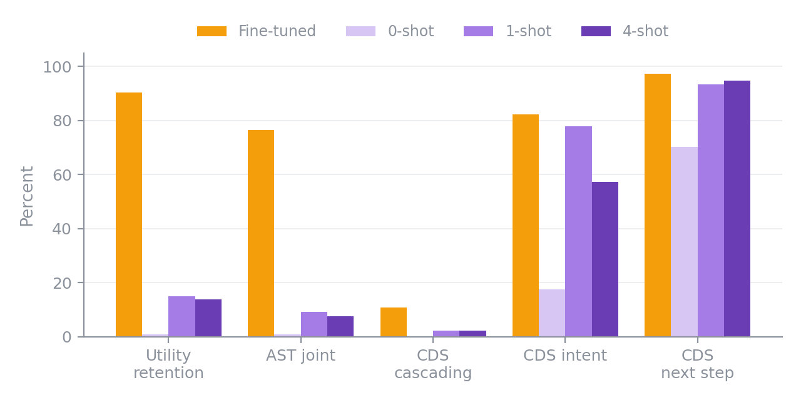
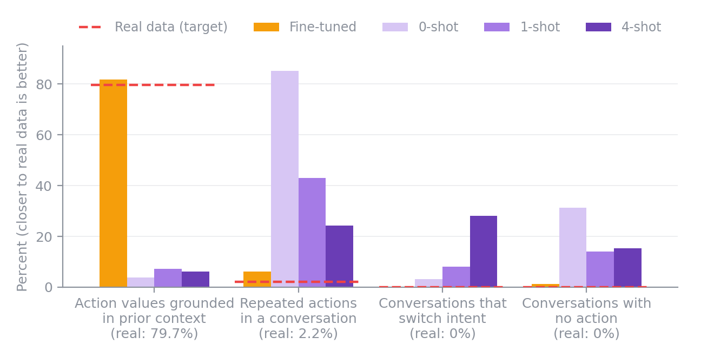
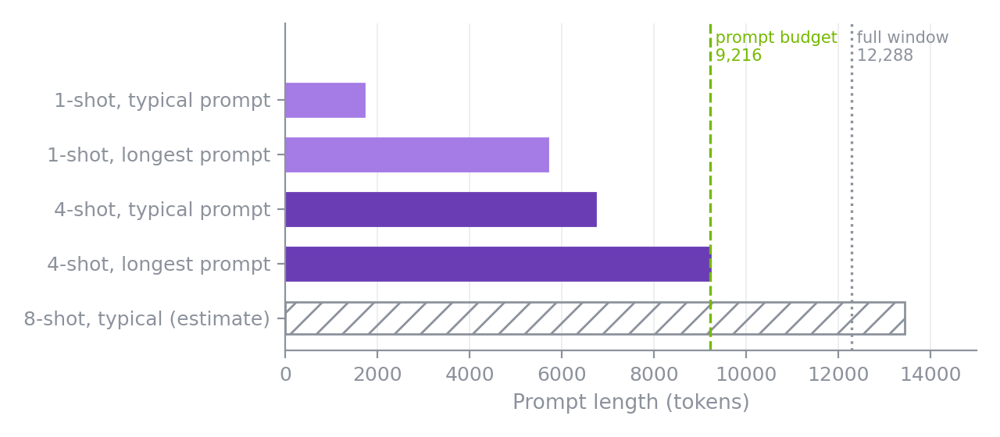
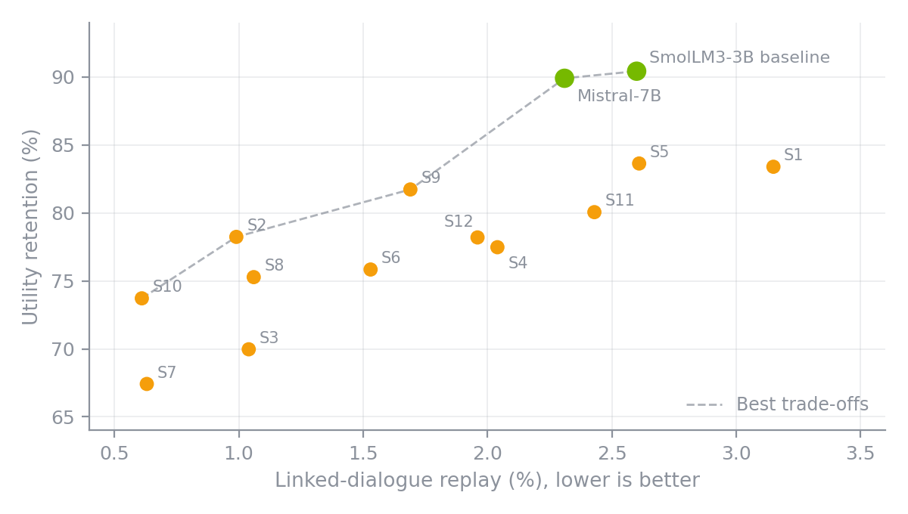
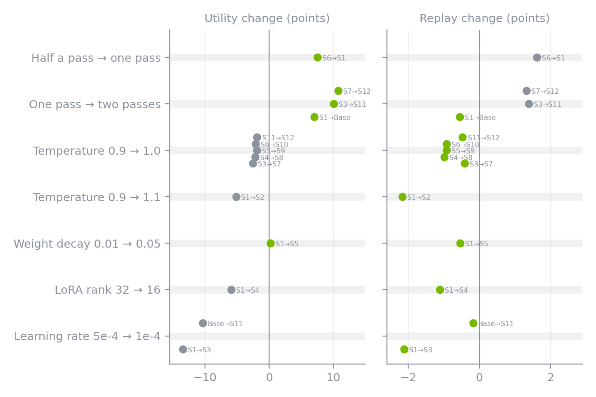
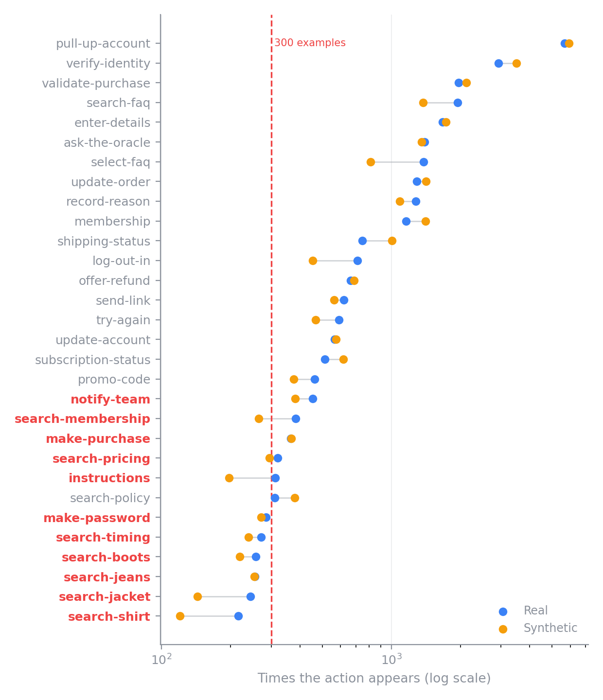
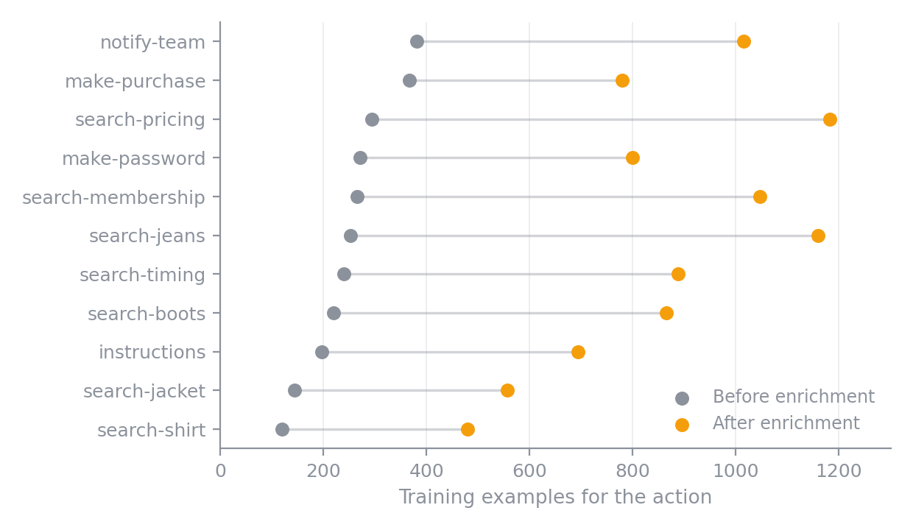
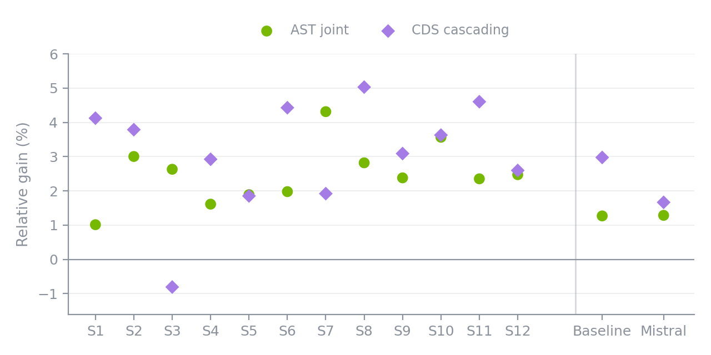

Tuning NeMo Safe Synthesizer for Agent Conversations (Part 2)¶
In Part 1, we turned 8,034 customer-service conversations into synthetic training data with NeMo Safe Synthesizer, and models trained on it kept 90.4% of the utility of models trained on the real data. That result used the default settings, which raises some natural follow-up questions. Is fine-tuning really necessary, or would a few example conversations in a prompt be enough? Which settings shift the balance between utility and replay of the training data? And can synthetic data help with labels that barely show up?
Part 2 answers those questions with three experiments on the same dataset.
TLDR
- Prompting alone did not work: the best prompt-only setup kept 14.99% of real-data utility, while fine-tuning kept 90.4%.
- The default settings gave the highest utility: none of the 12 alternative settings beat the baseline's 90.4% utility retention, the same downstream measure as in Part 1. Instead, they traded utility for less replay, down to 0.61% linked-dialogue replay at 73.7% utility.
- Extra generated examples helped rare actions: targeted enrichment improved action-state tracking in all 12 settings and dialogue success in 11 of 12.
A Quick Recap of the Data, Baseline, and Metrics¶
The data¶
The Action-Based Conversations Dataset (ABCD) has 10,042 human-to-human customer-service conversations for a fictional online retailer. Each conversation mixes customer and agent messages with workflow actions, such as pull-up-account or validate-purchase, and the values those actions record. Every conversation has one intent, such as return_size, from a set of 55. All customer profiles are fictional.
The input table¶
Each conversation is flattened into one row per event, with group_id identifying the conversation and t giving the event's position. The training split becomes 176,434 rows in 8,034 conversations. Part 1 walks through this step by step.
The baseline run¶
NeMo Safe Synthesizer fine-tunes a LoRA adapter on SmolLM3-3B and generates a synthetic corpus of about the same size (176,637 rows). Here is the configuration we used.
data:
group_training_examples_by: group_id
order_training_examples_by: t
holdout: 0
training:
pretrained_model: HuggingFaceTB/SmolLM3-3B
num_input_records_to_sample: 352868 # about two passes over the training rows
generation:
num_records: 176434
temperature: 0.9
replace_pii: null
How we score a synthetic dataset¶
We train T5-Small on the synthetic data only and test it on the real ABCD test split, for two tasks:
- Action State Tracking (AST) predicts the next action and its value. Joint accuracy requires both to be right.
- Cascading Dialogue Success (CDS) predicts the intent, next-step type, action, value, and the next agent response. The cascading score rewards getting consecutive future steps right.
Two numbers summarize each run:
- Utility retention takes the synthetic-trained model's AST joint accuracy and CDS cascading score, divides each by the real-trained model's score, and averages the two. 100% would match training on real data.
- Linked-dialogue replay is the share of synthetic conversations that reproduce a combination of rare entities (names, emails, IDs, and similar values that appear in at most three training conversations) that appeared together in one training conversation. Lower means less replay.
Every utility number below is the mean of three T5-Small training runs, unless noted. The baseline run kept 90.4% utility with 2.60% linked-dialogue replay.
Experiment 1. Can Prompting Replace Fine-Tuning?¶
ABCD has been public since 2021, so before giving fine-tuning the credit for Part 1's results, we wanted to rule out two simpler explanations. This experiment asks two questions.
- Did SmolLM3-3B already learn ABCD during pretraining? We do not know whether ABCD was part of its pretraining data. If the base model had seen or memorized it, it might produce useful ABCD conversations with no help at all.
- Is fine-tuning with NeMo Safe Synthesizer necessary? Large language models can often imitate a format from a few examples placed in the prompt. If in-context learning were enough, it would be a cheaper path.
To find out, we turned off adapter training and generated a full 176,434-row corpus three times from the base SmolLM3-3B model, with 0, 1, or 4 complete training conversations in each prompt. The zero-shot run tests what the base model already knows, and the one- and four-shot runs test in-context learning. Each prompt sampled its own example conversations, and we trained and evaluated T5-Small the same way as for the baseline. Whole-conversation prompting is an experimental capability that is not yet part of the released NeMo Safe Synthesizer.
The results¶

The zero-shot run answers the first question. With no examples, the base model produced almost no usable training signal, retaining 0.97% of real-data utility, which suggests it does not carry usable knowledge of ABCD's workflows from pretraining. Its exact rare-entity replay was also low, at 0.81%.
The one- and four-shot runs answer the second. One example conversation helped a lot with the easy parts, such as recognizing the intent and whether the agent should talk or act. It did not help with the hard part, which is choosing the right action and filling in the right values. One-shot retained 14.99% utility and four-shot 13.92%, and neither came close to the 90.4% from fine-tuning.
What went wrong¶
To see why, we compared the prompt-only corpora with the real training data and with the fine-tuned synthetic corpus from Part 1.

High-quality synthetic data should match the real data on each check, so the dashed red lines mark the target. The fine-tuned corpus tracks the real data on every check, while the prompt-only corpora show three failure patterns:
- Values come from nowhere: in real data, an action like
validate-purchaserecords the username and order ID the customer just typed, and 79.7% of non-empty action values appear in the preceding context. The fine-tuned corpus is at 81.8%. In the prompt-only corpora, only 3.9% to 7.2% did, so the downstream model was trained to produce values it could not have known. (The real-data rate is below 100% because some action values, such as membership levels, come from a fixed list rather than the dialogue.) - Workflows loop: repeated actions within a conversation make up 2.2% of action turns in real data and 6.1% in the fine-tuned corpus, but 24% to 85% in the prompt-only corpora.
- More examples, more confusion: with four example conversations in the prompt, 28% of generated conversations drifted between intents, as if the model blended the examples together. The fine-tuned corpus kept 99.95% of conversations on a single intent.
Why we stopped at four¶
Adding examples did not help. Four-shot prompting retained slightly less utility than one-shot (13.92% versus 14.99%), and 28% of its conversations drifted between intents, so the trend pointed away from longer prompts rather than toward them.
There is also a practical limit. Each example is a complete conversation, and conversations are long. NeMo Safe Synthesizer caps the model's context window at 12,288 tokens and, in this experiment, reserved 3,072 tokens for the model's reply, which leaves 9,216 tokens for the prompt.

The longest four-shot prompts reached 9,211 tokens, and 2.58% of prompts had to resample their examples to fit. At the four-shot median of 6,718 tokens, eight examples would need roughly 13,400 tokens, more than the entire window. SmolLM3-3B itself supports 65,536 tokens, so the limit comes from NeMo Safe Synthesizer's current cap, not from the model. We tested what NeMo Safe Synthesizer supports today and did not try longer prompts, but given the four-shot results, we do not expect more examples to close a gap of more than 75 points.
Prompts leak, too¶
Putting real conversations in the prompt sends their contents straight to the model. We ran the same replay audit from Part 1 on every corpus.
| Replay check | Fine-tuned | 0-shot | 1-shot | 4-shot |
|---|---|---|---|---|
| Exact rare-entity replay | 3.30% | 0.81% | 14.18% | 6.69% |
| Complete training conversations copied | 0 | 0 | 12 | 0 |
| Longest run of copied consecutive events | 8 | 2 | 42 | 29 |
| Segments with 10 or more copied events | 0 | 0 | 335 | 22 |
| Conversations repeating an entity from their own prompt | n/a | n/a | 14.2% | 9.4% |
One-shot prompting replayed rare entities at more than four times the fine-tuned rate and reproduced 12 training conversations verbatim, from 16 to 29 events long. Fine-tuning copied no complete conversation and never more than 8 consecutive events. The last row is specific to prompting. In the one-shot run, 432 of 3,049 linkable generated conversations repeated at least one rare entity from the example conversation in their own prompt, and in the four-shot run, 288 of 3,079 did. Real examples in a prompt become a direct path from the training data to the output.
For workflow data like this, fine-tuning is what makes actions, values, and intents hold together.
Key takeaway
A base model with a few examples writes text that looks like a conversation but does not behave like one.
Experiment 2. Turn the Knobs¶
Fine-tuning works, so the next question is how to tune it. We varied five settings around the baseline, each of which maps to a single configuration field.
| Knob | Config field | What it controls |
|---|---|---|
| Passes | training.num_input_records_to_sample |
Training rows the adapter sees |
| Learning rate | training.learning_rate |
How fast the adapter updates |
| LoRA rank | training.lora_r |
Adapter capacity |
| Weight decay | training.weight_decay |
Regularization on adapter weights |
| Temperature | generation.temperature |
How adventurous sampling is |
Half a pass, one pass, and two passes correspond to 88,217, 176,434, and 352,868 sampled rows.
We ran 12 settings, plus the baseline and a second backbone, and scored each one for utility and replay.
Reading the map¶

Each dot is one synthetic dataset. Up is more useful, and left is less replay. The orange dots are the 12 settings in the table below, labeled S1 to S12, and the green dots are the two-pass baseline and the same recipe on Mistral-7B. The dashed line connects the settings that no other setting beats on both axes.
| Setting | LR | Rank | WD | Passes | Temp | Utility (%) | Replay (%) |
|---|---|---|---|---|---|---|---|
| S1 | 5e-4 | 32 | 0.01 | 1 | 0.9 | 83.40 | 3.15 |
| S2 | 5e-4 | 32 | 0.01 | 1 | 1.1 | 78.24 | 0.99 |
| S3 | 1e-4 | 32 | 0.01 | 1 | 0.9 | 69.97 | 1.04 |
| S4 | 5e-4 | 16 | 0.01 | 1 | 0.9 | 77.48 | 2.04 |
| S5 | 5e-4 | 32 | 0.05 | 1 | 0.9 | 83.64 | 2.61 |
| S6 | 5e-4 | 32 | 0.01 | 0.5 | 0.9 | 75.84 | 1.53 |
| S7 | 1e-4 | 32 | 0.01 | 1 | 1.0 | 67.42 | 0.63 |
| S8 | 5e-4 | 16 | 0.01 | 1 | 1.0 | 75.28 | 1.06 |
| S9 | 5e-4 | 32 | 0.05 | 1 | 1.0 | 81.73 | 1.69 |
| S10 | 5e-4 | 32 | 0.01 | 0.5 | 1.0 | 73.72 | 0.61 |
| S11 | 1e-4 | 32 | 0.01 | 2 | 0.9 | 80.06 | 2.43 |
| S12 | 1e-4 | 32 | 0.01 | 2 | 1.0 | 78.20 | 1.96 |
| Baseline | 5e-4 | 32 | 0.01 | 2 | 0.9 | 90.43 | 2.60 |
| Mistral-7B | 1e-4 | 32 | 0.01 | 2 | 0.9 | 89.91 | 2.31 |
LR is the learning rate, Rank is the LoRA rank, WD is weight decay, and Temp is the generation temperature. Utility is utility retention, and Replay is linked-dialogue replay. The baseline uses SmolLM3-3B. Most utility numbers average three T5-Small training runs, but three of them average two: the AST result for S7 and the CDS results for S1 and S12. Mistral-7B's learning rate was chosen automatically by NeMo Safe Synthesizer.
What each knob did¶
Several pairs of settings differ in only one knob, which makes their effects easy to read. In the chart below, each dot compares one such pair. Green dots are improvements, meaning higher utility on the left and lower replay on the right, and gray dots are not.

What we observed:
- Passes were the biggest utility lever: every doubling of passes added 7 to 11 points of utility. Replay rose in three of the four comparisons, by 1.3 to 1.6 points. The exception, the one-pass S1 against the two-pass baseline, compares single generation runs and may be noise.
- Temperature was the cleanest replay lever: raising it from 0.9 to 1.0 lowered replay in all five comparisons for about 2 points of utility, and raising it to 1.1 cut linked replay by about two-thirds for about 5 points.
- Weight decay was nearly free: raising it to 0.05 trimmed replay by about half a point with no loss of utility.
- Smaller or slower adapters bought less replay with a lot of utility: lower rank and lower learning rate both reduced replay, but at a higher utility cost than temperature.
These are single runs of related settings, not a controlled ablation, so they point to directions rather than guaranteed effects on other data.
Picking an operating point¶
There is no single best setting. The right one depends on how much replay a use case can tolerate. A simple recipe works well:
- Pick a replay ceiling.
- Among the settings under it, take the one with the highest utility.
The dashed line on the map makes this quick. With a 1% ceiling, S2 is the best choice at 78.24% utility. With a 2% ceiling, it is S9 at 81.73%. With a 2.5% ceiling, it is Mistral-7B at 89.91%.
Filtering is a cheap complement to this recipe. As Part 1 describes, you can drop the synthetic conversations that the replay checks flag, and at these replay levels that removes only a few percent of the corpus. Filtering only removes the exact matches those checks detect, though. The settings above act on the model itself, so they are also likely to reduce near-copies that a filter cannot catch.
Swapping the backbone¶
Swapping the base model is a single configuration change, setting training.pretrained_model to mistralai/Mistral-7B-Instruct-v0.3. Mistral-7B landed close to SmolLM3-3B, at 89.91% utility and 2.31% linked replay versus 90.43% and 2.60%. It was much slower in our runs. Adapter training took 92 minutes instead of 39, and generating the base corpus took about 4 hours instead of 28 minutes. On this dataset, the larger model traded a small drop in utility for a small drop in replay, at several times the compute.
Experiment 3. Fill In Rare Actions¶
Real workflow data has a long tail. A few actions happen in almost every conversation, and others are rare. The synthetic corpus inherits that tail and makes parts of it a little thinner.

Each row is one action type, and the red labels mark the 11 actions we targeted. search-shirt, for example, appears 216 times in the real data but only 120 times in the synthetic corpus. A model trained on a few hundred examples of an action will struggle with it. Instead of collecting more real data, we generated more synthetic data and kept the parts we needed.
Step 1. Finding the rare actions¶
We started by counting actions in the synthetic output, which the Part 1 run saved as generate/synthetic_data.csv in its run directory.
import pandas as pd
run_dir = "./safe-synthesizer-artifacts/abcd---abcd_train_grouped/<run_name>"
synthetic = pd.read_csv(f"{run_dir}/generate/synthetic_data.csv")
actions = synthetic.loc[synthetic["event_type"] == "action", "historical_action_button"]
counts = actions.value_counts()
print(counts[counts < 300])
historical_action_button
search-pricing 294
make-password 271
search-membership 265
search-jeans 253
search-timing 239
search-boots 219
instructions 197
search-jacket 143
search-shirt 120
This finds 9 rare actions. Our experiment counted the examples the downstream task could actually use, which flagged two more, make-purchase and notify-team. That made 11 targeted actions.
Step 2. Generating a larger pool from the same adapter¶
There is no need to retrain. We reused the adapter from the baseline run and generated a bigger pool with run generate. If you ran Part 1 with the CLI, the baseline run saved its artifacts under ./safe-synthesizer-artifacts/abcd---abcd_train_grouped/<run_name>/, and --run-path points run generate at that exact run. This matters once you have trained more than one adapter, because --auto-discover-adapter picks the most recently trained one. run generate writes its evaluation report and metrics into the run directory it is given, so we copied the baseline's generate/ folder first to keep its results.
RUN=./safe-synthesizer-artifacts/abcd---abcd_train_grouped/<run_name>
cp -r "$RUN/generate" "$RUN/generate-baseline"
safe-synthesizer run generate --config abcd.yaml \
--data-source abcd_train_grouped.csv \
--run-path "$RUN" \
--generation__num_records 300000 \
--output-file pool.csv
On one NVIDIA H100 80GB GPU, this produced 300,258 rows in 45.3 minutes.
Step 3. Keeping the conversations that contain rare actions¶
From the pool, we kept every new occurrence of a targeted action, together with the full conversation up to and including that action. The preceding turns matter, because the downstream model needs to see the dialogue that leads to an action in order to learn when to take it and which values to fill in. We skipped pool conversations that duplicated a conversation already in the base corpus, and we appended the selected conversation prefixes to the base corpus.
For the baseline run, this added 4,160 conversation prefixes.
| Before | After | |
|---|---|---|
| AST training examples | 28,581 | 44,158 |
| Targeted-action share | 9.6% | 21.4% |
Every targeted action gained between 359 and 907 training examples.

Did it help?¶

The chart shows each setting's relative change after enrichment, compared with the same setting before enrichment.
- AST joint accuracy improved in all 12 sweep settings, by 1.0% to 4.3%.
- CDS cascading score improved in 11 of 12, with changes from −0.8% to +5.0%.
- The baseline improved on both, with AST joint up 1.27% and CDS cascading up 2.98%. Its utility retention rose from 90.4% to 92.3%.
- Mistral-7B improved too, by 1.29% and 1.67%.
These are relative changes. For the baseline, the 1.27% AST gain is about one point of accuracy, from 76.46% to 77.44%.
Exact rare-entity replay barely moved. Across the 12 settings, it changed by at most 0.18 points in either direction after enrichment.
Enrichment did not lift every metric. For the baseline, CDS next-step accuracy dipped from 97.36% to 96.74%, CDS action accuracy from 83.13% to 81.67%, and CDS value accuracy from 61.07% to 60.87%, while AST, CDS Recall@1, and the cascading score all improved.
Takeaways from These Experiments¶
- Fine-tuning mattered for this workflow data: on ABCD, the base model showed no usable knowledge of the dataset, and prompting with real examples came nowhere close to fine-tuning.
- A replay ceiling makes tuning simple: fix the ceiling first, then take the most useful setting under it.
- Temperature and weight decay were the cheapest replay levers on this dataset.
- More passes bought utility, usually with some extra replay.
- A generated pool strengthened rare labels, as long as each added example kept the conversation context before the rare action.
These experiments use one public dataset of fictional conversations, run as offline batch jobs on a single GPU. The best settings for other data may differ, but the same knobs and the same way of reading the trade-off carry over.
This wraps up the series. Part 1 covers how we reshaped the conversations, what the synthetic data looks like, and how it performed with the default settings.
Have questions or want to share what you are building? Open a GitHub discussion or file a feature request.
ABCD is Copyright © 2021 ASAPP Research and is used under the MIT License.